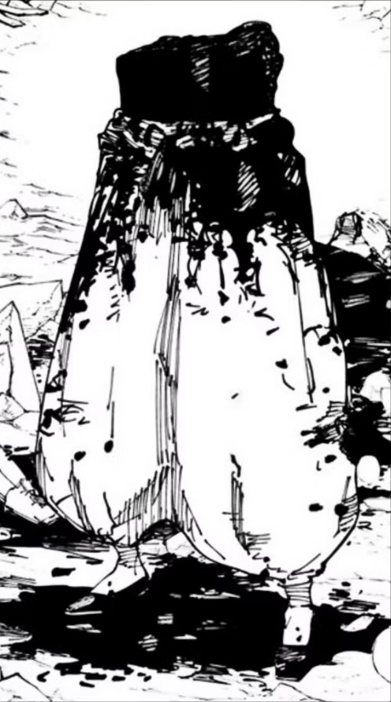
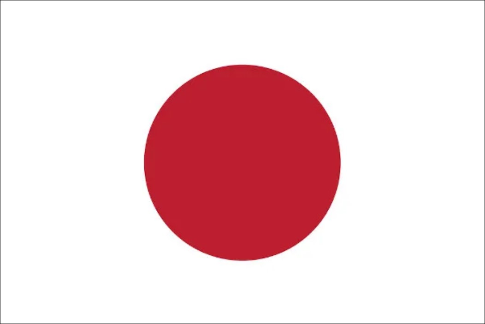

Gojo Satoru
Japanese (Age: 28) 
Satoru Gojo (五条悟 Gojō Satoru) is one of the main protagonists of the Jujutsu Kaisen series. He is a special grade jujutsu sorcerer and widely recognized as the strongest in the world. Satoru is the pride of the Gojo Family, the first person to inherit both the Limitless and the Six Eyes in four hundred years. He works as a teacher at the Tokyo Jujutsu High and uses his influence to protect and train strong young allies.
Achievements:
Limitless / Six Eye
Novo Atacante do Vasco 
Pepsi